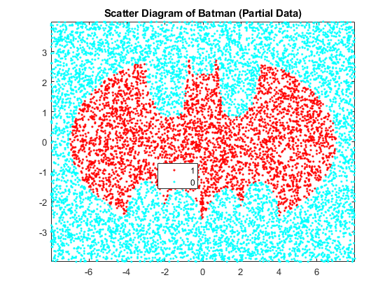
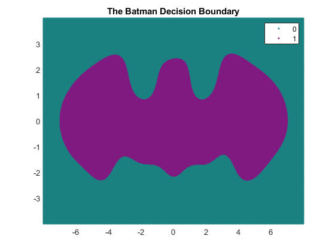
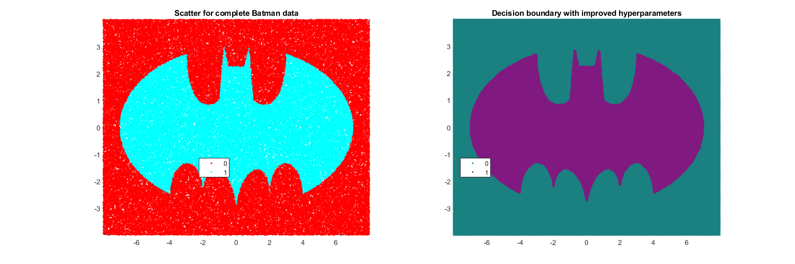

Exercise 4 - Classifying the BM-Dataset
Submitted by Prasannjeet Singh
Contents
1. Plotting the Dataset
Note that I have used only 10,000 datasets to reduce the time taken to run the project. However, I have also performed the same with complete dataset and saved the result. Those are also displayed at the bottom.
% Loading the dataset load BM.mat % Cropping the dataset to first ten thousand items X = batmanX(1:10000,:); Y = num2cell(num2str(batmany(1:10000,:))); hFig = figure(1); gscatter(X(:,1),X(:,2),Y); title('Scatter Diagram of Batman (Partial Data)'); axis tight; snapnow; close(hFig);
2. Running fitcsvm() with chosen hyperparameters
Following hyperparameters were used to make the decision boundary as precise without taking much time:
- KernelFunction: gaussian
- BoxConstant: 1
- KernelScale: 1
classes = unique(Y); rng(1); % For reproducibility SVMModels = fitcsvm(X,Y,'KernelFunction','gaussian','BoxConstraint',1,'KernelScale',1.5);
3. Plotting Decision Boundary
Creating a Mesh-Grid (x-y axis) from min value of x to max value of x with a separation of 0.02:
d = 0.02; [x1Grid,x2Grid] = meshgrid(min(X(:,1)):d:max(X(:,1)),min(X(:,2)):d:max(X(:,2))); xGrid = [x1Grid(:),x2Grid(:)]; % Predicting for all the values in the mesh grid maxScore = predict(SVMModels,xGrid); % Plotting the Batman Decision boundary: f1 = figure(3); gscatter(xGrid(:,1),xGrid(:,2),maxScore,[0.1 0.5 0.5; 0.5 0.1 0.5]); title('The Batman Decision Boundary'); axis tight; snapnow; close(f1);
Training Error Rate
trainingError = sum(str2num(cell2mat(predict(SVMModels,X))) ~= batmany(1:10000)) trainingErrorRate = trainingError/size(X,1)*100
trainingError =
174
trainingErrorRate =
1.7400
Therefore, it can be observed that current model has only 174 errors out of a total of 10000 datasets, with the training error rate of 1.74 percent.
4. Observation with Complete Data:
Following hyperparameters were used which made nicer decision boundaries, but took huge time. Note that to make a sharp decision boundary we are basically trying to overfit our model. And in that case, we have to impose huge penalty if any point tries to cross the margins. And we can impose higher penalty by increasing the parameter BoxConstant. However, an increase in BoxConstant results in increased run time of the algorithm.
- KernelFunction: gaussian
- BoxConstant: 20
- KernelScale: 0.2
Loading the data to showcase the results:
The data contains both fitcsv model and the predicted solution to make the decision boundary. However, the model will not be used as I have already predicted the boundaries to save time.
load Data/batmodel.mat; hFig = figure(4); set(hFig, 'Position', [0 0 1500 500]); subplot(1,2,1); gscatter(batmanX(:,1), batmanX(:,2), batmany); title('Scatter for complete Batman data'); axis tight; subplot(1,2,2); gscatter(xGrid(:,1),xGrid(:,2),batscore,[0.1 0.5 0.5; 0.5 0.1 0.5]); title('Decision boundary with improved hyperparameters'); axis tight; snapnow; close(hFig);
Training Error Rate
Since we have tried to overfit the data, we expect lower training error rate than what we got below. Training error rate can be calculate via the following code:
% trainingError = sum(str2num(cell2mat(predict(BatModel,batmanX))) ~= batmany) % trainingErrorRate = trainingError/size(batmanX,1)*100
However, since it takes time, I have already calculated it and the training error, on a total of 100,000 training set turned out to be only 107, with a training error rate of 0.107%, which is noticeably lower than our previous calculation.